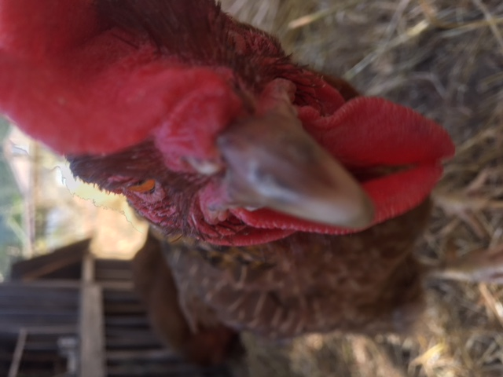

My Background
Family
These are the people that raised me...

- Juliana Stewart
- or "Mama" is my mother. She is a lactation consultant at Kaiser Permenente, as well as an amature farmer.
- Joe Stewart
- or "Papa" is my dad. He is a science teacher at Redwood High School.
- Grace Stewart
- or "The Other One" is my twin sister.
- Eli Stewart
- is my brother (not triplet). He is a junior in Cal Computer Science. He did not help with this website.
The Story of My Birth
I was born in Santa Rosa Hospital. Despite being a twin, I was a healthy, fat baby.
My Backyard
My backyard is full of animals. I have a goat, two dogs, two ducks, eleven chickens, and some very large goldfish.
